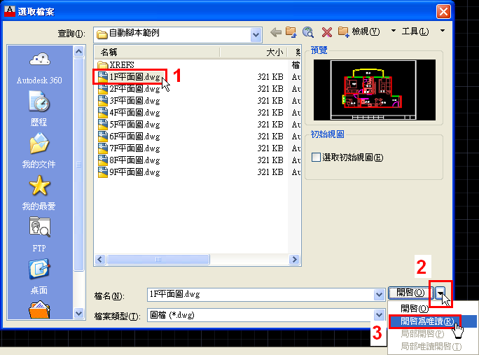
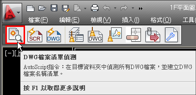
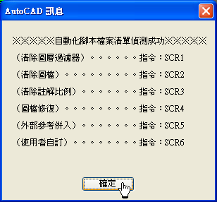
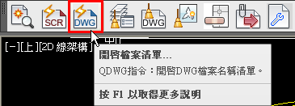
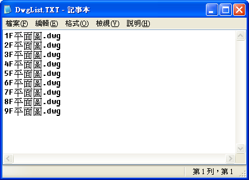

⏹️PSLTSCALE (系統變數)
控制圖紙空間視埠中顯示的物件之線型比例。
0 依照模型空間調整線型
1 依照空間配置調整線型
⏹️LTSCALE (系統變數)
設定整體的線型比例係數。
⏹️INSUNITS (系統變數)
指定將圖塊、影像或外部參考插入或貼附至圖面時，自動比例調整的圖面單位值。
5 插入單位:公分
0 插入單位:無單位
👇腳本語法:
註1：請將語法中的 ;符號改為"空隔"，腳本檔步驟不支援;符號，腳本檔中"空隔"代表【Enter鍵】。
PSLTSCALE;0;LTSCALE;30;INSUNITS;5;
PSLTSCALE;1;LTSCALE;50;INSUNITS;0;
多年的繪圖工作，常常要大量批次處理圖面，早期都是自行編寫腳本檔來完成，但是總覺得不是那麼便利，於是「自動腳本」工具就誕生囉～
簡單說使用者只要指定「DWG圖檔」資料夾位置後，程式即可自動幫您完成腳本檔並且執行批次作業。
■「自動腳本」工具分為「偵測圖檔」及「批次作業」二大類。
偵測圖檔功能：「DWG檔案清單偵測」、「開啟自動化腳本檔」及「開啟檔案清單」。
批次作業功能：「清除圖層過濾器」、「清除圖檔」、「清除註解比例」、「圖檔修復」及「外部參考併入」。
另外，還提供「使用者自訂」巨集功能，可以編寫符合業界工作需求的腳本語法。例如：批次完成圖檔「雲狀泡泡圖」圖層關閉等需求。
https://www.autocad-tw.com/t14824-topic
※使用說明※
步驟一：指定「DWG圖檔」資料夾位置
1.使用「開啟」OPEN指令 → 瀏覽選取目標資料夾中任一個DWG圖檔 → 指定「開啟 ▼」選項 → 選擇「開啟為唯讀」。

2.點選「DWG檔案清單偵測」工具按鈕。

3.畫面顯示「自動化腳本檔案清單偵測成功」訊息 → 點選「確定」。

步驟二：檢視「DWG檔案清單」
1.點選「開啟檔案清單」工具按鈕

2.畫面顯示「DWG檔案清單」記事本檔案。

註：使用者可以編輯記事本檔案，刪掉不需批次作業的DWG檔案清單。
步驟三：指定「批次作業」
選擇目前檔案需要「批次作業」的功能按鈕，程式將自動執行腳本檔完成工作任務。
AutoCAD顧問外掛程式 - 自動腳本工具1
步驟四：「使用者自訂」巨集
工作任務 >> 批次完成圖檔「雲狀泡泡圖」圖層關閉，並將視窗畫面設定為「實際範圍」。
巨集語法：LAYER;M;0;F;修訂雲形;;ZOOM;E;
註1.請將語法中的 ;符號改為"空隔"，腳本檔步驟不支援;符號，腳本檔中"空隔"代表【Enter鍵】。
註2.語法輸入完畢後請按【Enter鍵】完成自訂腳本檔。
AutoCAD顧問外掛程式 - 自動腳本工具2
看完之後別忘投下您寶貴的一票，完成投票可以下載範例影片喔！